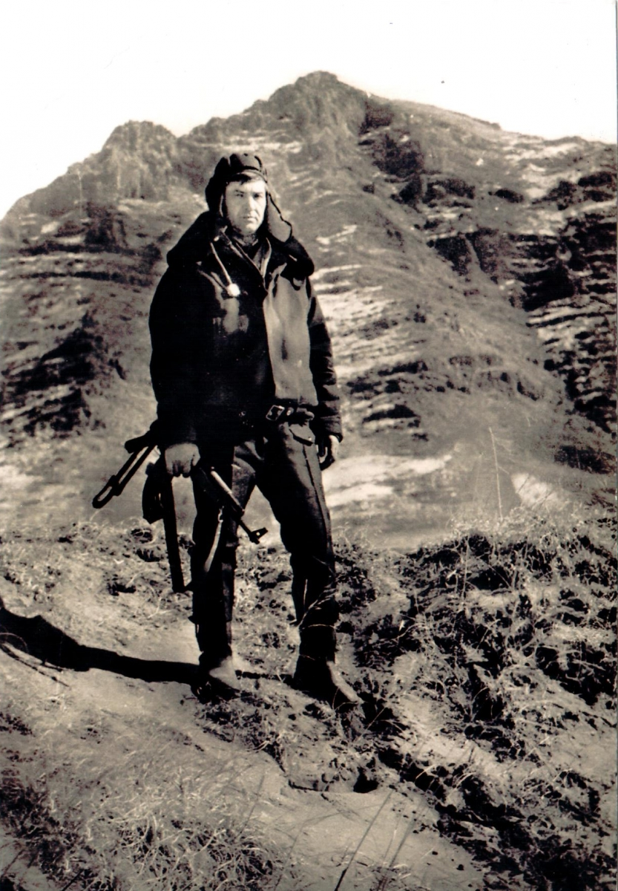

Воины - интернационалисты
Ветераны...
➤
15 февраля 1989 года для многих белорусов осталось в памяти как день, который положил конец войне в Афганистане. Сегодня. Сегодня вряд ли кто возьмется подсчитывать, сколько человеческих судеб было искалечено. Но достоверно известно, что на афганской земле воевало 30 тысяч уроженцев Беларуси, что около 800 человек вернулись в Беларусь «грузом 200» в «черных тюльпанах», а 12 белорусов до сих пор числятся без вести пропавшими, тысячи остались инвалидами… Матери и отцы скорбят по своим не вернувшимся домой сыновьям. Болит душа и у тех, кто не разучился переживать и сострадать чужому горю. Солдат войну не выбирает и не объявляет, верный воинской присяге, он выполняет приказ
В Афганской войне 1979-1989 гг. принимало участие 28 832 белоруса, пропало без вести 12 человек , не вернулось домой 735 человек. Этот конфликт - сочетание трагедии и героизма. Какими бы ошибочными ни казались нам мотивы той войны, помнить наших героев, сражавшихся за Родину, мы обязаны
Вечная память павшим!
Звание Героя Советского Союза и России за Афганскую войну получило пять уроженцев Беларуси. Вспомним их поимённо.
Звание Героя Советского Союза и России за Афганскую войну получило пять уроженцев Беларуси. Вспомним их поимённо.
Мельников Андрей Александрович (1968-1988) - уроженец Могилёва, гвардии рядовой знаменитой десантной 9-й роты. В бою за высоту 3234 яростно отражал атаки душманов и погиб от брошенной боевиками мины. Посмертно награжден званием Героя Советского Союза.
Чепик Николай Петрович (1960-1980) - уроженец деревни Блужа Пуховичского района Минской области, гвардии старший сержант, десантник. Возвращаясь с боевого задания, отряд Чепика нарвался на засаду, а сам сержант был ранен в ногу. Привязав к дереву осколочную мину направленного действия и направив её на врагов, подорвался и ценой своей жизни решил исход боя. За жизнь Чепика своей жизнью поплатились 30 афганских боевиков.
Сергеев Евгений Георгиевич (1956-2008) - уроженец Полоцка, офицер спецназа ГРУ, участник Афганской и Первой Чеченской войн, инвалид Чеченской войны. В 1987 году, выполняя задание командования, в составе спецгруппы захватил у душманов образец "Стингера", которые передавались американцами для борьбы с нашими самолётами и вертолётами. Из-за проблем с политработниками звание Героя не получил. Награда нашла своего героя в 2012 году уже после смерти офицера. Указом Президента РФ Сергееву было присвоено звание Героя России.
 Пименов Василий Васильевич (1954-2005) - уроженец Витебска, комбат 345 гвардейского отдельного парашютно-десантного полка. Успешно провёл 35 боевых операций, захватив однажды идущий из Пакистана караван с лазуритом, оцененный впоследствии в 2,5 млн долларов. Герой Советского Союза.
Пименов Василий Васильевич (1954-2005) - уроженец Витебска, комбат 345 гвардейского отдельного парашютно-десантного полка. Успешно провёл 35 боевых операций, захватив однажды идущий из Пакистана караван с лазуритом, оцененный впоследствии в 2,5 млн долларов. Герой Советского Союза.
Щербаков Василий Васильевич (1951-2010) - уроженец деревни Казимирово Полоцкого района Витебской области, майор, командир вертолётной эскадрильи. Совершил 318 боевых вылетов. 20 января 1980 года, спасая раненных советских лётчиков, приземлился прямо на поле боя и вывез экипаж из зоны боевых действий.
Полковник Барсуков — уроженец России, но судьбой был тесно связан с Беларусью. Также Герой СССР.
Ковалев Игорь Аркадьевич Родился 27.12. 1963 года в городе Гомеле. Погиб 11. 03. 1984 года при исполнении интернационального долга, награжден орденом «Красной звезды».
Н.В.Шульга,1968 г.р. В 1986 г был направлен в пограничные войска, Туркменистан,г.Керки. Награды и отличия: «Старший погранотряда»», « Отличник Советской Армии», «Отличник ПВ II степени», «70 лет ВС СССР», «От афганского народа», «В память 10-летия вывода советских войск из Афганистана».
Н.В. Булавский, 1967 г.р. Был призван на срочную службу 11 мая 1985 г. В Афганистан попал 30 ноября 1985 г. Рядовой, механик-водитель БМП. Демобилизован 7 мая 1987 года. Награды: «За боевые заслуги», «70 лет Вооруженным Силам СССР», «От афганского народа», «В память 10-летия вывода советских войк из Афганистана».
Н.В. Булавский, 1967 г.р. Был призван на срочную службу 11 мая 1985 г. В Афганистан попал 30 ноября 1985 г. Рядовой, механик-водитель БМП. Демобилизован 7 мая 1987 года. Награды: «За боевые заслуги», «70 лет Вооруженным Силам СССР», «От афганского народа», «В память 10-летия вывода советских войк из Афганистана».
Руководитель Вехнедвинской районной общественной организации ветеранов в Афганистане и других войн и локальных конфликтов. Воевал в Афганистане, прапорщик. Награжден медалью «За боевые заслуги», юбилейными медалями.
B январе 1980 г был заброшен в Афганистан. Служил в Кабуле старшим врачом эскадрильи в группе спасателей. Участвовал в боевых действиях, получил два ранения. За мужество, проявленное на службе, награжден двумя орденами Красной Звезды. Закончил службу в Афганистане в звании подполковника. Из Афганистана вернулся в 1982 г.
И.П.Гусько, 1961 года рождения, выпускник Волынецкой средней школы 1978 г. Срочную службу проходил в Кабуле. Разведрота ВДВ. Награжден медалью «За отвагу», юбилейными медалями: «70 лет ВС СССР», «От афганского народа», «В память 10-летия вывода советских войск из Афганистана».
В.Н. Гирдюк, 1966 г.р., выпускник Волынецкой СШ 1982 г. Срочную службу проходил в Джалалабаде. Влйска ПВО. Награжден медалью «За боевые заслуги», юбилейными медалями : «70 лет ВС СССР», «От афгаского народа», «В память 10-летия вывода советских войск из Афганистана».
В.Н. Карницкий, 1965 г.р., рядовой ВДВ, находился в Афганистане с февраля 1985 г по октябрь 1986г. Награжден медалью «За отвагу» и юбилейными медалями:»В память 10-летия вывода советских войск из Афганистана» и «70 лет Вооруженных Сил СССР».
В.П Бриль, 1964 г.р. В армию был призван в декабре 1982 г. Из «учебки» попал в Афганистан. Служил в Кабуле Артил. Войска, мл.сержант, механик-водитель. Награды: «70 лет ВС СССР», «От афганского народа», «В память 10-летия вывода Сов.войск из Афганистана». Леонид Реут Служил в Афганистане одновременно с В.Брилем и B.Карницким, десантник, военный водитель. Возил боеприпасы и продовольствие
Родился 3. 02. 1968 года в поселке Де - Кастри Хабаровского края. Членом ВЛКСМ не был. Русский. В 1983 году закончил речицкую школу - интернат №1, в 1986 году работал на гомельском радиозаводе, электросварщиком. 10. 09.1986 года призван для прохождения воинской службы СА в Афганистан. Погиб 23.031988 года. Награжден орденом «За отвагу», «Красная звезда».
Тарасенко Сергей Иванович Родился 15. 10. 1965 года в г. Гомеле. Погиб в ноябре 1988 года. Посмртно награжден орденом «Красной звезды»
Петр Суман из простой крестьянской семьи. В начале лета 1983-го Суман получил назначение в Афганистан, а именно в Баграм, командиром 285-го танкового полка. В боевых операциях он участвовал с первых дней в качестве заместителя начальника оперативной группы 108-й мотострелковой дивизии. За глаза афганцы прозвали его Черным командором. И это было не из страха, а скорее как дань восточного уважения перед блестящим офицером и порядочным человеком. А душманские по-левые командиры назначили за его голову солидные деньги: 800 тысяч афгани. Для примера, за подбитый советский БМП платили 20 афгани. Суман получил звание полковника, но это был потолок. Последняя его офицерская должность в армии – военный комиссар Железнодорожного района г. Гомеля.
Белоушко Юрий Николаевич. 11.06.1966 г.р., п. Дойничево Бобруйского р-на Могилевской обл. Белорус. Призван 30.08.1985 г. Бобруйским РВК. В ДРА с февраля 1986 г. Ефрейтор, наводчик-оператор БМП (пулеметчик) ДШМГ 48 ПОГО КСАПО. Принимал участие в 32-х боевых операциях. Погиб 27.02.1987г. в ночном бою в н.п. Даркад (Дархат), похоронен по месту рождения, где его именем названа улица. Награжден орденом Красного Знамени (посмертно).
Вареник Борис Иосифович. 04.09.1965 г.р., г. Макеевка Донецкой обл.Белорус . Призван 23.10.1983 г. Центральногородским РВК г. Макеевка. Рядовой, стрелок–гранатометчик ДШМГ 117 ПОГО КСАПО. Погиб 20.08.1984г. в Куфабском ущелье у н.п. Чашм-Дара, похоронен на Центральном казачьем кладбище г..Макеевка. Награжден орденом Красной Звезды (посмертно).
Вашетин Владимир Викторович. 09.12.1964 г.р., д. Корма Добрушского р-на Гомельской обл. Белорус. Призван 24.11.1983 г. Добрушским РВК. Ефрейтор, заряжающий миномета ММГ ОВГ ВПО. 17.10.1985 г. во время проведения армейской операции в Зардевском ущелье был тяжело ранен, умер от ран, похоронен в д. Корма, где его именем названа улица. Награжден орденом Красной Звезды (посмертно).
Вильчевский Владимир Васильевич. 26.02.1969 г.р., д. Гореничи Березинского р-на Минской обл. Белорус. Призван 11.05.1987 г. Березинским РВК. Рядовой, механик-водитель БМП 1 ММГ 48 ПОГО КСАПО. Погиб 11.05.1989 г. при исполнении служебных обязанностей (был в БМП, упавшей с Хайратонского моста), похоронен по месту рождения.
Горошко Владимир Иванович. 18.09.1965 г.р., д. Дубровка Брагинского р-на Гомельской обл. Белорус. Призван 21.11.1983 г. Светлогорским ОГВК Гомельской обл. Проходил службу в ДРА. Младший сержант, начальник радиостанции подразделения в/ч пп 2454. 01.05.1985 г. был тяжело ранен во время проведения армейской операции. Умер 08.05.1985 г. от полученных ран. Похоронен в г..Светлогорск. Награжден орденом Красной Звезды (посмертно).
Гук Владимир Владимирович. 03.01.1968 г.р., д. Холопья Ивацевичского р-на Брестской обл. Белорус. Призван 13.11.1986 г. Ивацевичским РВК. Старший сержант, командир саперного отделения 1 ММГ 81 ПОГО КСАПО. Участвовал в 107 боевых операциях. 13.05.1988 г. в районе кишлака Мармоль (18 км к югу от Мазари-Шарифа, провинция Балх) при проводке колонны с базы 1 ММГ 81 ПОГО (точка «База») на точку 1534, группа сапёров из восьми человек попала в душманскую засаду, шестеро из которых, в т.ч. и В.В.Гук, погибли в бою. Похоронен в г. Ивацевичи. Награжден орденом Красной Звезды и медалью «За боевые заслуги» (посмертно).
Журович Олег Владимирович. 05.06.1965 г.р., г. Минск. Белорус. Призван 27.10.1983 г. Лельчицким РВК Гомельской обл. Рядовой, сапер инженерно-саперной роты ОВГ ВПО. Проходил службу в составе ММГ Панфиловской заставы на территории ДРА. Погиб 22.11.1985 г. при выполнении боевого задания в около н.п..Афридж в Зардевском ущелье. Похоронен в пос. Лельчицы. Награжден орденом Красной Звезды (посмертно).
Карабанов Игорь Аркадьевич. 28.07.1968 г.р., г. Жлобин Гомельской обл. Белорус. Призван 29.10.1986 г. Жлобинским РВК. Ефрейтор, минометчик 3 ММГ 117 ПОГО КСАПО. Участвовал в 29 боевых операциях. Погиб 09.04.1988 г. в около кишлака Сар-Рустак, похоронен по месту рождения. Награжден орденом Красного Знамени (посмертно).
Клачок Александр Васильевич. 01.01.1959 или 12.12.1958 г.р., д. Дубинец Ушачского р-на Витебской обл. Белорус. Призван 10.12.1978 г. Ушачским РВК. Старший лейтенант, старший летчик-штурман вертолета Ми-8 17 ОАПП КСАПО. Погиб 21.02.1983 г. при выполнении полета (борт № 30) над территорией ДРА в р-не 12 ПЗ 68 ПОГО КСАПО. Похоронен в д. Дубинец Ушачского р-на Витебской обл. Награжден медалью «За отличие в охране государственной границы СССР» (посмертно).
Ковшик Анатолий Степанович. 12.10.1968 г.р., д. Дворец Лунинецкого р-на Брестской обл. Белорус. Призван 17.11.1986 г. Лунинецким РВК. Рядовой, минометчик минометного взвода 5-й ММГ 68 ПОГО КСАПО. Участвовал в 23 боевых операциях. Погиб 14.06.1988 г. в бою у кишлака Бирки (Яккаписта около Кайсара). Похоронен по месту рождения. Награжден орденом Красной Звезды и медалью «Воину-интернационалисту от благодарного афганского народа» (посмертно).
Королев Александр Иванович. 11.12.1950 г.р., г. Челябинск. Белорус. Призван в сентябре 1973г. Витебским ГВК. Капитан, штурман звена вертолетов Ми-8 23 ОАЭ (в/ч 9787) КСАПО. Проходил службу в ДРА, выполнил более 50 боевых вылетов. Погиб 10.07.1982г. при выполнении полета (борт № 29) в р-не перевала Банди-Малаи (кишлак Газан) восточнее Чахи-Аба, похоронен на кладбище д. Чановичи Бешенковичского р-на Витебской обл. (по другим данным – на кладбище «Мазурино» г. Витебска). Награжден орденом Красной Звезды (посмертно).
Красовский Петр Станиславович. 04.12.1961 г.р., д. Венера Логойского р-на Минской обл. Белорус. Призван в августе 1979 г. Капитан, старший бортовой техник звена вертолетов Ми-24 23 ОАПП КСАПО. Находясь в служебной командировке в ДРА, выполнил более 900 боевых вылетов. Погиб 17.01.1988 г. у н.п. Яккатут в р-не н.п. Имам–Сахиб, похоронен в д. Великие Нестановичи Логойского р-на. Награжден орденом Красной Звезды и орденом Красного Знамени (посмертно), медалями «За боевые заслуги» и «За отличие в охране государственной границы СССР».
Лапко Михаил Иванович. 27.09.1961 г.р., д. Станелевичи Поставского р-на Витебской обл. Белорус. Призван 23.10.1979 г. Поставским РВК. Ефрейтор, старший водитель-электромеханик 311 отдельного батальона специальной связи. В ДРА неоднократно выполнял задачи в боевой обстановке, участвовал в проводке транспортных колонн. 11.09.1981 г., доставляя грузы в часть, колонна подверглась внезапному нападению группы противника около г. Кабул, в р-не строительства электростанции. Погиб в ходе боя. Награжден орденом Красной Звезды (посмертно). Похоронен в д. Ласица Поставского р-на Витебской обл
Левченко Игорь Васильевич. 20.08.1964г.р., п. Высокое Каменецкого р-на Брестской обл. Русский. Призван 30.10.1982г. Жовтневым РВК г. Днепропетровска. Младший сержант, командир расчета гранатомета ДШМГ 48 ПОГО КСАПО. Умер 08.12.1984 г. при исполнении обязанностей военной службы в ДРА, похоронен в г..Днепропетровск, где перед школой № 66 установлен памятный знак. Награжден орденом Красной Звезды (посмертно).
Лисанов Сергей Николаевич. 27.05.1967 г.р., г. Гродно. Русский. Призван 28.10.1985 г. Гродненским ГВК. Рядовой, старший стрелок ДШМГ 47 ПОГО КСАПО. Участвовал в 21 боевой операции. Погиб 22.05.1987 г. в р-не кишлака Бала-Бокан, похоронен в г. Гродно. Награжден орденом Красного Знамени (посмертно).
Малашенко Федор Николаевич. 09.02.1967 г.р., д. Долговичи Мстиславского р-на Могилевской обл. Белорус. Призван 29.10.1985 г. Гомельским ОГВК. Рядовой, пулеметчик ДШМГ 47 ПОГО КСАПО. Участвовал в 43 боевых операциях. Погиб 25.11.1987 г. в р-не н.п. Сарайи-Кала, похоронен в г. Добруше Гомельской обл. Награжден орденом Красного Знамени, медалями «За отличие в охране государственной границы СССР» и «Воину-интернационалисту от благодарного афганского народа» (посмертно).
Науменко Виктор Иванович. 26.09.1966 г.р., с-з «Аректы» Кургальджинского р-на Целиноградской обл. Белорус. Учился в Краснобережском совхозе-техникуме Жлобинского р-на Гомельской обл. Призван Жлобинским РВК 27.10.1984 г. Рядовой, сапер 1 ММГ 81 ПОГО КСАПО. Участвовал в боевых операциях, рейдах, проводках автоколонн. Обезвредил девять «душманских» мин и фугасов. Погиб 23.10.1986 г. в ходе боя, начавшего в ходе разминирования участка местности. Награжден орденом Красной Звезды (посмертно). Похоронен в д. Коротковичи Жлобинского р-на Гомельской обл., где создан его музей.
Пинчук Виктор Григорьевич. 24.09.1963 г.р., д. Ребуса Речицкого р-на Гомельской обл. Белорус. Призван 20.10.1982 г. Гомельским ОГВК. Рядовой, старший водитель транспортно-хозяйственного отделения минометной батареи 2 ММГ 81 ПОГО КСАПО. Погиб 02.02.1984 г. в бою в районе ущелья Мармоль Балхской провинции ДРА. Похоронен по месту рождения. Награжден орденом Красной Звезды (посмертно).
Подрез Павел Францевич. 26.03.1968 г.р., д. Заречная Воложинского р-на Минской обл. Белорус. Призван 17(21).11.1986 г. Воложинским РВК. Рядовой, водитель БМП 1 ММГ 68 ПОГО КСАПО. Принимал участие в 16 боевых операциях. Погиб 24.11.1987 г. в р-не н.п. Сарайи-Кала, похоронен в пос. Богданово Воложинского р-на Минской обл., где его именем названа улица. Награжден орденом Красной Звезды и медалью «Воину-интернационалисту от благодарного афганского народа» (посмертно).
Позняк Сергей Васильевич. 03.02.1965 г.р., г. Харьков. Белорус. 27.10.1983 г. призван Киевским РВК г. Харькова. Рядовой, водитель БТР ММГ 66 ПОГО КСАПО. 06.12.1985 г. в бою в ущелье Дарай-Сабз около н.п. Даргак был тяжело ранен. Умер от ран в госпитале 08.12.1985 г., похоронен в г. Харьков. Награжден орденом Красной Звезды (посмертно).
Рахманов Иван Иванович. 29.06.1967 г.р., г. Исфара Таджикской ССР. Белорус. Окончил Березовское ГПТУ Лидского р-на Гродненской обл. Работал мастером на стеклозаводе «Неман». Призван 30.10.1985 г. Лидским РВК. Старшина сверхсрочной службы, командир взвода ДШМГ 117 ПОГО КСАПО. Участвовал в 47 боевых операциях, рейдах, проводках автоколонн. В ходе десантной операции в р-не кишлака Сар-Рустак 08.04.1988 г. повел за собой подразделение, захватив большую часть района десантирования. В бою погиб, подорвавшись на мине, похоронен в д..Гончары Лидского р-на Гродненской обл. Награжден орденом Красного Знамени и медалью «За боевые заслуги» (посмертно). На школе в д. Гончары, в которой учился, установлена мемориальная доска.
Рускевич Валерий Владимирович. 28.09.1958 г.р., г. Слуцк Минской обл. Белорус. Призван в августе 1971 г. Капитан, командир звена вертолетов Ми-8 17 ОАПП КСАПО. Выполнил более 200 боевых вылетов. Погиб при выполнении боевого вылета 27.06.1985 г. в ущелье Акдара, что в 35км юго-западнее г. Мазари-Шариф (в р-не хребта Альбурс, около Балха), похоронен в г. Ташкенте. Награжден двумя орденами Красного Знамени (вторым – посмертно).
Санец Сергей Михайлович. 16.10.1965 г.р., д. Вересница Житковичского р-на Гомельской обл. Белорус. Призван в октябре 1983 г. Пинским РВК Брестской обл. Ефрейтор, механик-водитель 1 ПЗ 3 ММГ 81 ПОГО КСАПО. 22.07.1985 г. во время проведения боевой операции около кишлака Садрабат получил сильные ожоги от которых умер 27.07.1985 г. в госпитале в г. Душанбе. Похоронен по месту рождения. Награжден орденом Красной Звезды (посмертно).
Саранчук Александр Александрович. 05.06.1964 г.р., с. Островское Камышнинского р-на Кустанайской обл. Белорус. Работал токарем на бумажной фабрике «Герой труда» в г. Добруш Гомельской обл. 19.10.1982 г. призван Добрушским ОГВК. Рядовой, бортмеханик – воздушный стрелок-радист вертолета Ми-24 17 ОАПП КСАПО. Неоднократно участвовал в боевых операциях по разгрому отрядов мятежников. 23.10.1983 г. при совершении разведывательного полета в р-не газопровода между н.п. Акчой и Шиберганом вертолет был сбит, экипаж погиб. Похоронен в г. Добруш Гомельской обл. Награжден орденом Красной Звезды (посмертно).
Свиридович Михаил Иванович. 05.06.1939 г.р., д. Барановка Червенского р-на Минской обл. Белорус. Призван в 1958 г. Подполковник, начальник продфуражной службы тыла КСАПО, советник в 1-й бригаде ПВ ДРА. Погиб 31.05.1984 г. при исполнении обязанностей военной службы в р-не г. Джелалабад, похоронен в г..Пятигорск Ставропольского края. Награжден орденом Красной Звезды, орденом Ленина (посмертно).
Сидорович Вячеслав Петрович. 14.11.1961 г.р., г. Шахтинск Карагандинской обл. Казахстана. Поляк. Призван в июле 1979 г. Дзержинским РВК Минской обл. В 1983 г. окончил Алма-Атинское Высшее пограничное командное училище КГБ СССР им. Ф. Э. Дзержинского. Боевые задачи в ДРА выполнял с декабря 1984 г., участвовал в пяти боевых операциях. Старший лейтенант, помощник начальника штаба ММГ по разведке, командир разведвзвода 3 ММГ 48 ПОГО КСАПО. 29.09.1985 г. в бою за кишлак Кыргыз около г. Имам-Сахиб погиб от прямого попадания снаряда в БТР. Похоронен в д. Павловщина (п. Городище) Дзержинского р-на Минской обл. Награжден орденом Красного Знамени (посмертно).
Скоробогатый Владимир Владимирович. 01.12.1948 г.р., д. Вышково Шкловского р-на Могилевской обл. Белорус. Призван в июне 1967 г. В 1971 г. окончил Витебский авиацентр ДОСААФ. Старший лейтенант, старший техник вертолета 4 ОАЭ КСАПО. С декабря 1979г. выполнял боевые задания в ДРА, выполнил 50 боевых вылетов по обеспечению десантно-боевых операций, доставке оружия, боеприпасов и продуктов подразделениям пограничных войск. Умер 25.11.1980 г. в госпитале г. Мары. Похоронен в г. Шклове. Награжден орденом Красной Звезды (посмертно).
Скурчаев Геннадий Титович. 08.12.1968 г.р., д. Корени Светлогорского р-на Гомельской обл. Белорус. Призван 10.12.1986 г. Светлогорским РВК. Рядовой, стрелок-водитель 5 ММГ 68 ПОГО КСАПО. Участвовал в 24 боевых операциях. Погиб 14.06.1988г. у кишлака Яккаписта в р-не Кайсара во время проведения боевой операции. Похоронен по месту рождения. Награжден орденом Красной Звезды, медалями «За отличие в охране государственной границы» и «70 лет Вооруженных Сил СССР» (посмертно).
Тарасенко Сергей Иванович. 15.10.1965 г.р., г. Гомель. Белорус. Призван 28.10.1983 г. Гомельским ОГВК. Рядовой, оператор РЛС ММГ Панфиловской ПЗ ОВГ ВПО. Неоднократно выполнял спецзадания на территории ДРА. Погиб 22.11.1985 г. в р-не н.п. Афридж в Зардевском ущелье при исполнении обязанностей военной службы, похоронен в г. Гомель на кладбище «Якубовка». Награжден орденом Красной Звезды (посмертно).
Трехминов Сергей Евгеньевич. 24.07.1966 г.р., г. Шклов Могилевской обл. Белорус. Призван 05.08.1983 г. Шкловским РВК. Лейтенант, командир инженерно-саперного взвода 2 ММГ 117 ПОГО КСАПО. Погиб 25.06.1989 г., похоронен по месту рождения.
Удот Дмитрий Иванович. 20.03.1967 г.р., д. Шестаки Щучинского р-на Гродненской обл. Белорус. Призван 10.10.1985 г. Щучинским РВК. Ефрейтор, заместитель командира боевой группы ДШМГ 48 ПОГО КСАПО. С 23.12.1986 г. проходил службу в ДРА. 27.02.1987 г. во время выполнения боевого задания в р-не н.п. Дархад получил тяжелое ранение в голову. Умер от ран 22.03.1987 г. в госпитале в г. Душанбе. Похоронен по месту рождения. Награжден орденом Красной Звезды [По данным ЦПА ФСБ РФ – Красного Знамени], медалями «За отвагу» и «Воину-интернационалисту от благодарного афганского народа» (посмертно).
Ханеня Николай Артемович. 29.04.1962 г.р., г. Житковичи Гомельской обл. Белорус. Призван 25.05.1982 г. Житковичским РВК. Младший сержант, инструктор службы собак 2 ПОГЗ 1 ММГ 47 ПОГО. Погиб 30.04.1983 г., похоронен по месту рождения. Награжден орденом Красной Звезды (посмертно).
Шпаковский Владимир Владимирович. 10.04.1986 г.р., г. Пинск Брестской обл. Белорус. Призван 17.11.1986 г. Пинским ОГВК. Младший сержант, санинструктор 3 ММГ 68 ПОГО КСАПО. Участвовал в 30 боевых операциях. Погиб 26.02.1988 г. во время марша из Карабага в Кайсар, похоронен в д. Галево Пинского р-на. Награжден орденом Красной Звезды и медалью «Воину-интернационалисту от благодарного афганского народа» (посмертно).
Ядловский Александр Леонидович. 19.01.1967 г.р., в д. Скубятино Кировского р-на Могилевской обл. Белорус. Пизван 30.10.1985 г. Кировским РВК. Рядовой, помощник гранатометчика 2 ПЗ ДШМГ 48 ПОГО КСАПО. Участвовал в 18 боевых операциях. 19.10.1986 г. в бою в р-не кишлаков Ишкидими – Ишатоп – Якутут получил ранение в голову, от которого умер 16.11.1986 г. в госпитале в г..Душанбе. Похоронен в д. Копачевка Кировского р-на. Награжден орденом Красной Звезды (посмертно). Его именем названа улица в пос. Жиличи Кировского р-на Могилевской обл.
Роман Матеюн – один их пятерых жителей Глуботчины, не вернувшихся «из-за речки». Проходил срочную службу в Венгрии, был связистом. После окончания службы возглавлял в Вилейке спортивное общество «Урожай». С 1982 года – кадровый военный. В 1987 году был направлен в Афганистан. Служил в Кабуле. При перелете в город Лашкардах самолет, в котором находился Роман с товарищами, был сбит. Погибли 17 человек, в числе и он. Уже после гибели брата службу в Афганистане нес Артур Матеюн.
Алданов Сергей Александрович, родился 30 августа 1960 г. в п. Елизово Осиповичского района Могилевской области. В 1975г. Сергей окончил 8 классов Буда-Кошелевской средней школы №2, в 1977 г. – Минское суворовское военное училище, в 1981 г. – Ленинградское высшее артиллерийское командное училище. Служил в Монголии, потом в Приволжском военном округе. В феврале 1986 г. С.А. Алданов направлен в Афганистан. 2 сентября 1987 г. во время исполнения боевого задания машина капитана С.А. Алданова подорвалась на мине. Похоронен в г. Буда-Кошелево. Посмертно награжден орденом Красной Звезды. У С.А. Алданова растет дочь Катя. В его честь в Буда-Кошелево проводится юношеский турнир по вольной борьбе, который стал уже международным. Призы победителям вручает мать Сергея -- Зинаида Антоновна.
Бандуристый Виталий Анатольевич, родился 12 мая 1964 г. в д. Джамбул Павлодарской области. В 1981 г. закончил Заболотскую среднюю школу. Работал шофером в колхозе «Искра». В 1982 г. призван в Советскую армию Буда-Кошелевским РВК, направлен в Афганистан. В одной из операций рядовой В.А. Бандуристый был тяжело ранен и 19 марта 1984 г. умер от ран. Похоронен в д. Заболотье.
Ивашутин Валерий Альфредович, родился 09 июня 1965г. в г. Лесозаводск Приморского края. В 1982 г. окончил Дуравичскую среднюю школу и курсы в учебно-производственном комбинате г. Буда-Кошелево. Работал в совхозе «Дубовицкий». В октябре 1983 г. призван в Советскую армию Буда-Кошелевским РВК. Направлен в Афганистан. Рядовой В.А. Ивашутин погиб 8 сентября 1984 г. Похоронен в д. Дуравичи. Награжден орденом Красного Знамени.
Игнатенко Геннадий Михайлович, родился 7 февраля 1959 г. в п. Высокая Грива Панкрушихинского района Алтайского края. Детство прошло в п. Коммунар. В 1974 г. окончил 8 классов Коммунаровской средней школы, в 1977 г. -- Речное училище в Гомеле. Работал токарем на Гомельском заводе пусковых двигателей. В 1977 г. призван в Советскую армию Гомельским РВК. В 1979 г. окончил школу прапорщиков. Служил в Ленинградской области. В 1982 г. по особой просьбе направлен в Афганистан. Прапорщик Игнатенко погиб 24 апреля 1983 г. Похоронен в д. Особино. Посмертно награжден орденом Красного Знамени.
Моисеев Петр Петрович, родился 13 сентября 1967 г. в д. Дубовица. В 1983 г. окончил 8 классов Дуравичской средней школы. Работал в бригаде по выращиванию овощей в совхозе «Дубовицкий». В 1986 г. призван в Советскую армию Буда-Кошелевским РВК. Направлен в Афганистан. Младший сержант П.П. Моисеев погиб 6 апреля 1988 г. Похоронен в д. Дуравичи. Награжден медалями «Воину-интернационалисту от благодарного афганского народа», «За отличие в воинской службе» и другими.
Сидоренко Геннадий Михайлович, родился 17 февраля 1965 г. в д. Лозов. После окончания средней школы учился в ПТУ-81 г. Гомель. В апреле был призван в Советскую армию Гомельским РВК. В августе 1983 г. направлен в Афганистан. При исполнении боевого задания ефрейтор Г.М. Сидоренко был тяжело ранен и 16 июля 1984 г. умер от ран. Похоронен в д. Лозов. Посмертно награжден орденом Красной Звезды.
Чепиков Юрий Иванович, родился 14 марта 1967 г. в д. Новая Гусевица. В 1985 г. окончил Гусевицкую восьмилетнюю школу, в 1986 г. – Костюковичское ПТУ №179. Работал трактористом в колхозе имени Ленина. В мае 1986 г. призван в Советскую армию Буда-Кошелевским РВК. Направлен в Афганистан. Ю.И. Чепиков погиб 9 февраля 1988г. Похоронен в д. Новая Гусевица. Посмертно награжден орденом Красной Звезды. Юрий был отмечен также вымпелами «Лучший водитель» (20 рейсов по дорогам Афганистана) и знаком «За самоотверженный ратный труд».
Шейко Георгий Николаевич, родился 14 сентября 1962 г. в Минске. В 1977 г. Георгий окончил 8 классов средней школы №12 г. Минска, среднее образование получил в Минской средней школе №51. В 1981 г. окончил с отличием Минское ПТУ №12, получил специальность фотографа. В апреле 1981 г. призван в Советскую армию Московским РВК г.Минска. С июня 1981г. в Афганистане. Рядовой Г.Н. Шейко погиб 20.04.1983г. Похоронен по желанию матери на ее Родине в г.п. Уваровичи. Посмертно награжден орденом Красной Звезды, медалью «Воину-интернационалисту от благодарного афганского народа». В музеях школ и ПТУ, где учился воин-интернационалист Г.Н. Шейко, ему посвящены экспозиции.
«Участники Афганской войны (1979—1989)» Служащие МВД, Гомельская область